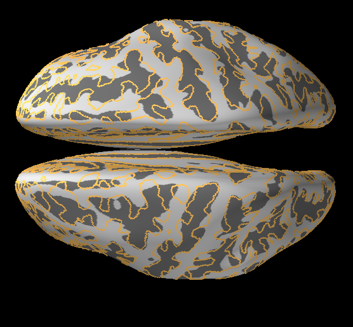

This example shows how PySurfer can be used to examine the quality of Freesurfer’s curvature-driven normalization to a common template.
We are going to plot the contour of the subject’s curvature estimate after transforming that map into the common space (this step is performed outside of PySurfer using the Freesurfer program mri_surf2surf).
With a perfect transformation, the contour lines should follow the light/dark gray boundary on the fsaverage surface. Large deviations may reflect problems with the underlying data that you should investigate.
Python source code: plot_freesurfer_normalization.py
import nibabel as nib
from surfer import Brain
brain = Brain("fsaverage", "both", "inflated")
for hemi in ["lh", "rh"]:
# This file was created with mri_surf2surf
curv = nib.load("example_data/%s.curv.fsaverage.mgz" % hemi)
# Binarize the curvature at 0
curv_bin = (curv.get_data() > 0).squeeze()
# Add the data as a contour overlay, but turn off the colorbar
brain.add_contour_overlay(curv_bin, 0, 1.15, 2, 3, hemi=hemi)
brain.contour_list[-1]["colorbar"].visible = False
brain.show_view("dorsal")